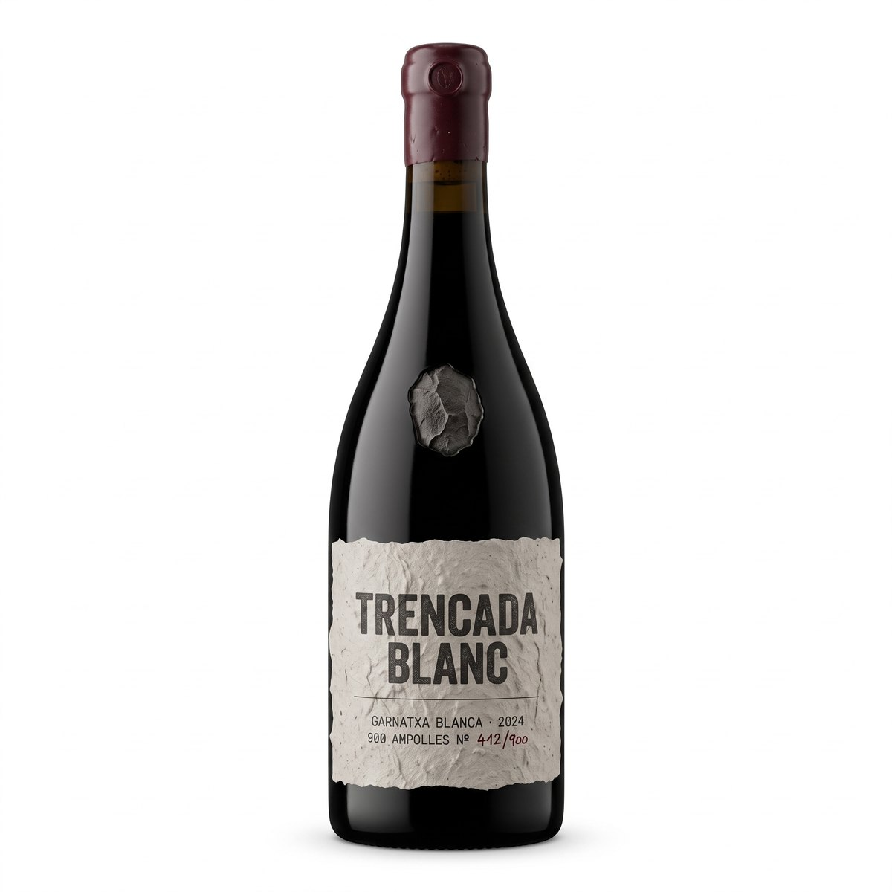
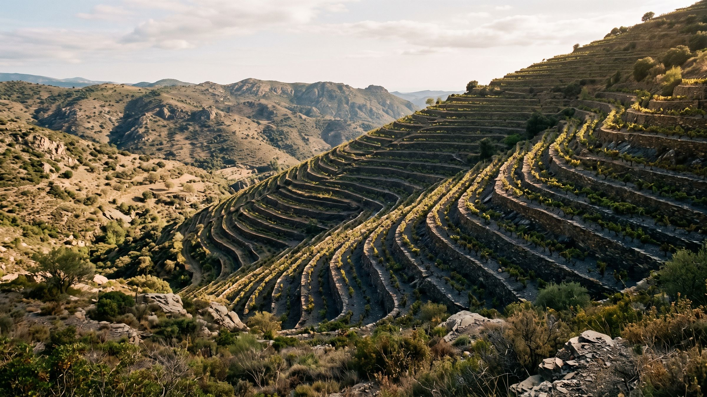
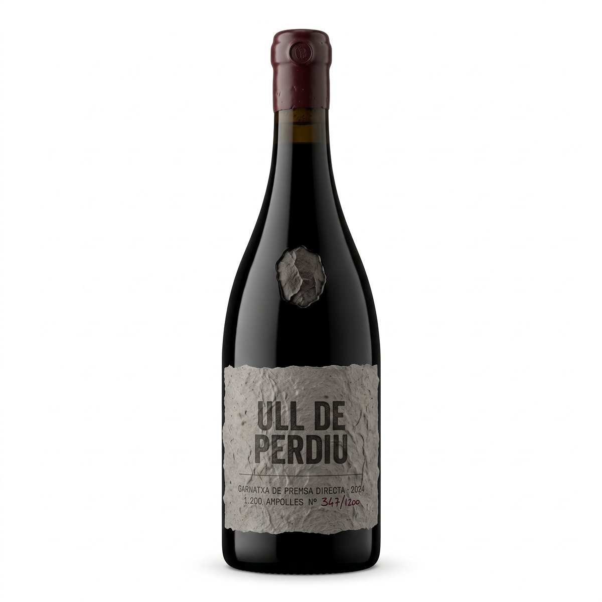
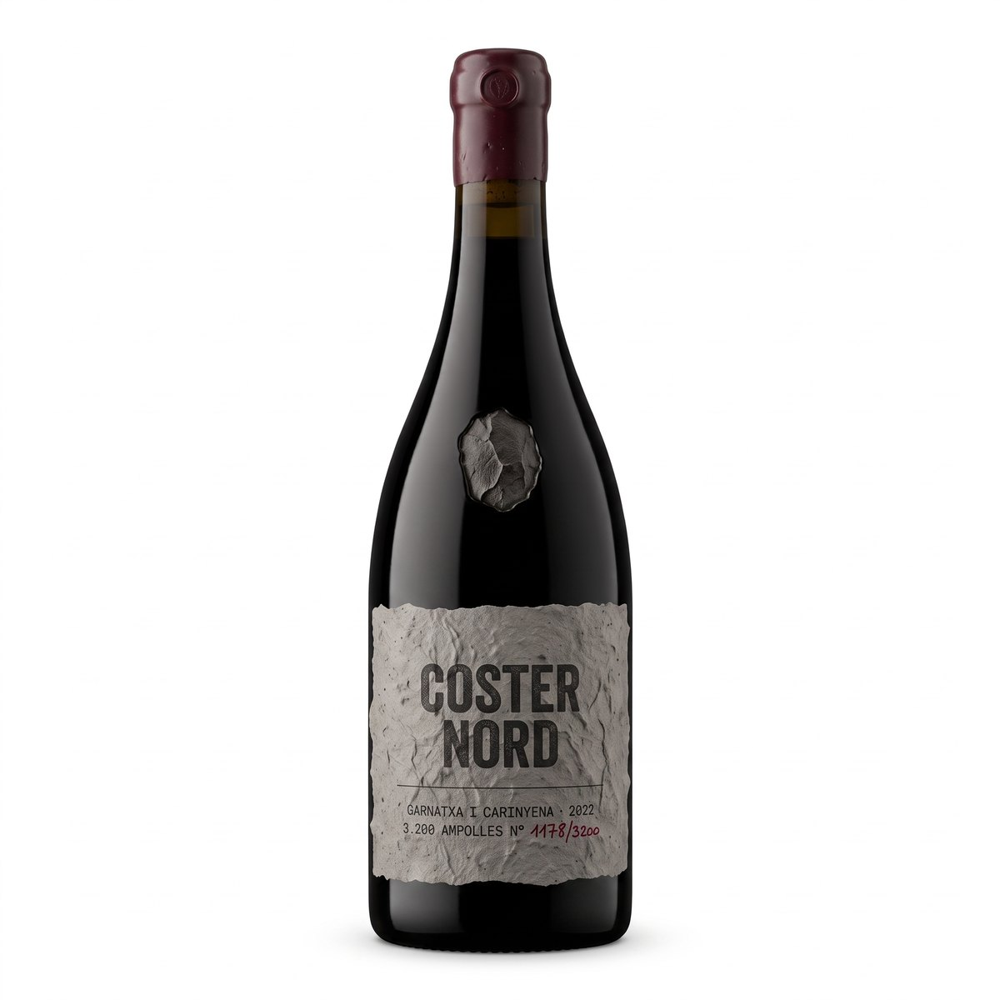
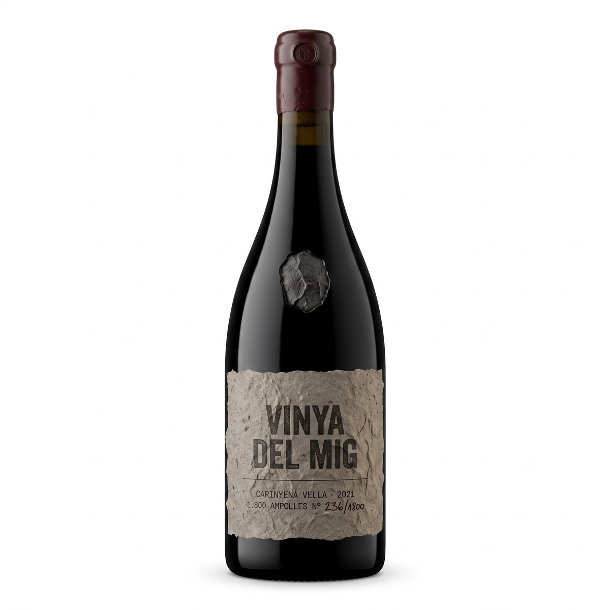
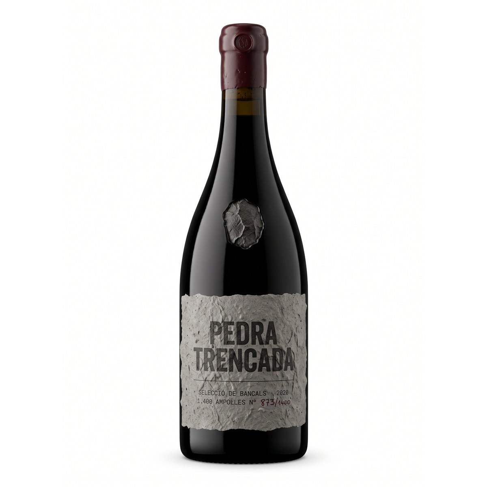
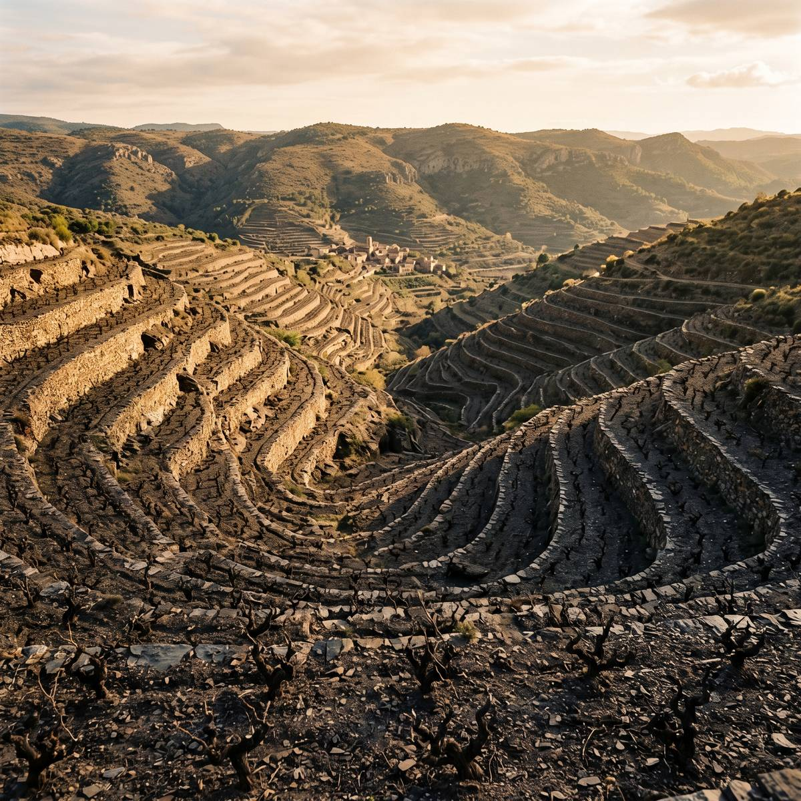
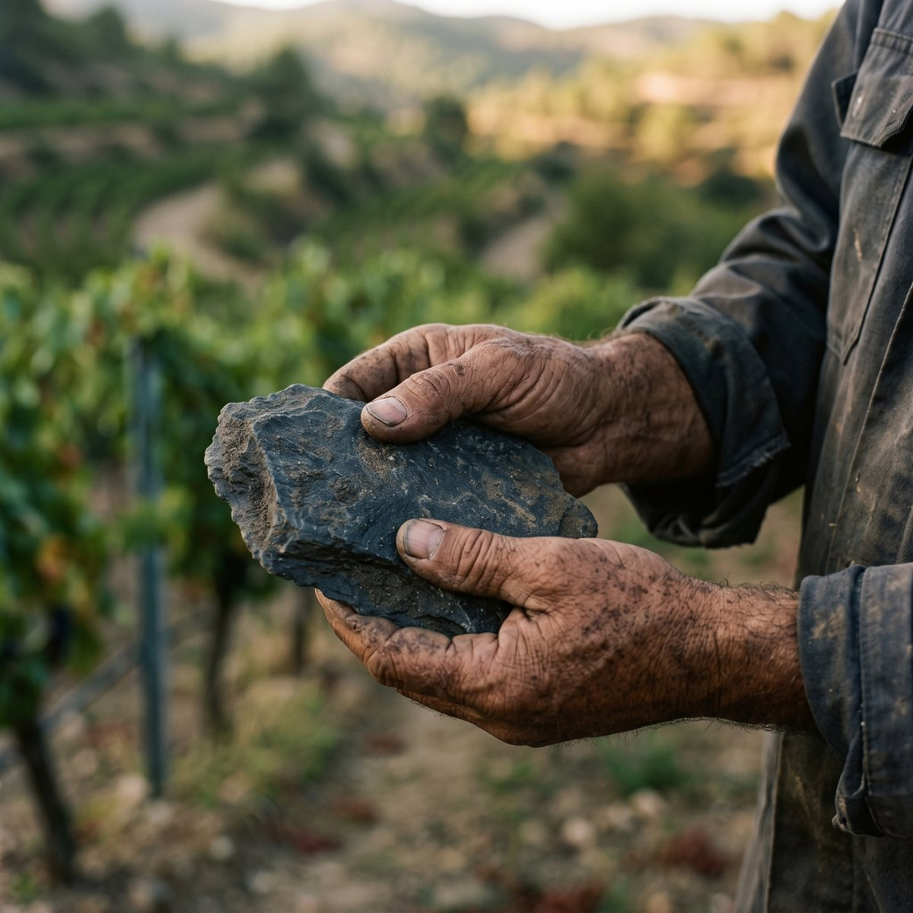
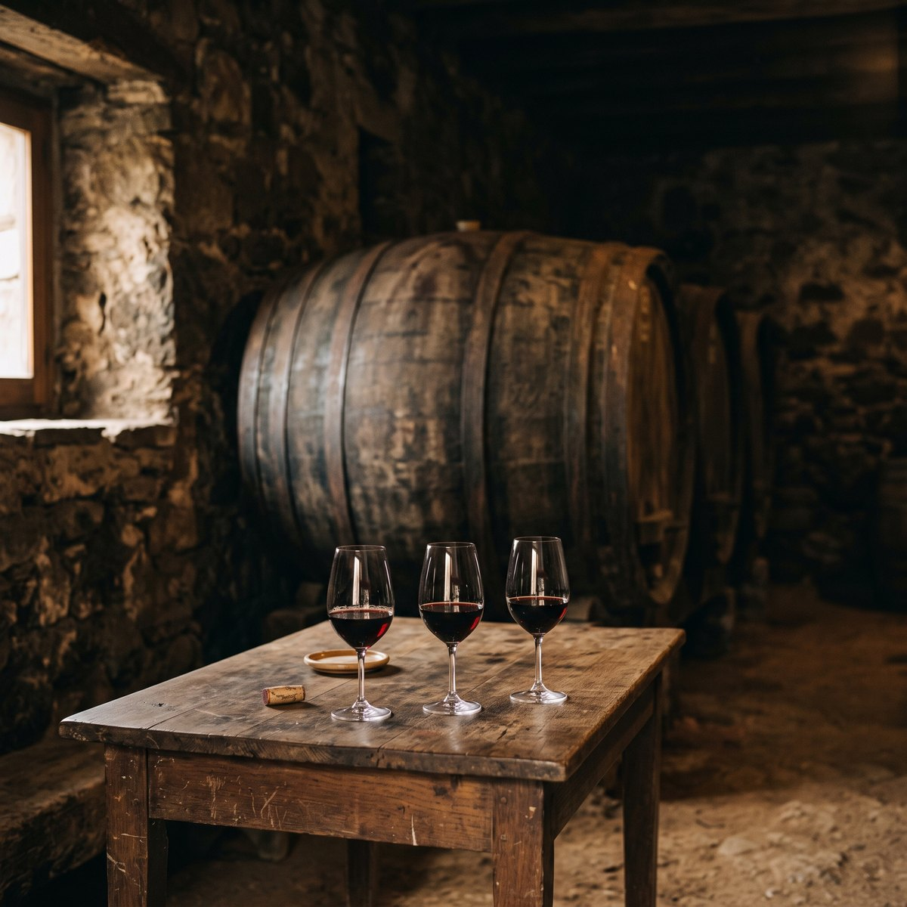
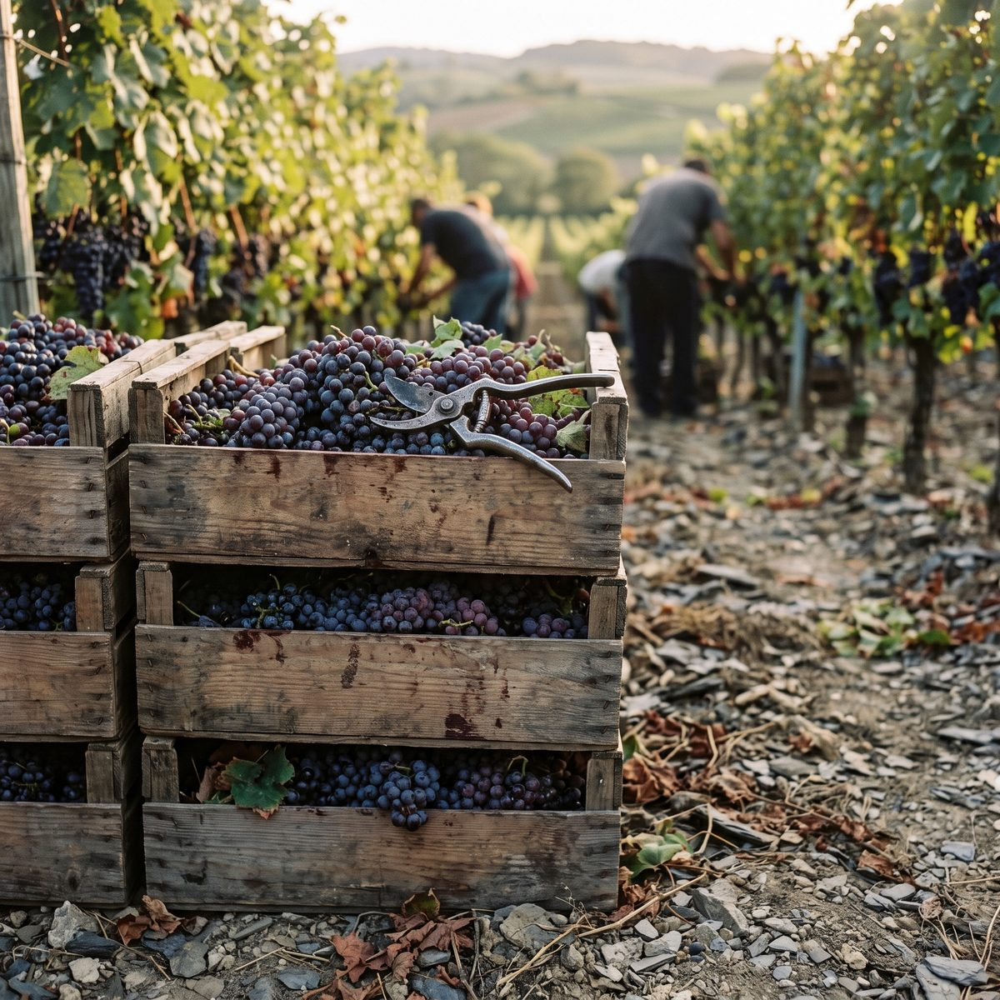

Trencada Blanc22 €
2024 · Garnatxa blanca · 900 ampolles
Els nostres bancals tenen pendents que passen del 50%. Cap tractor hi arriba: aquí es poda, es verema i es baixa el raïm a esquena, com fa vuit-cents anys. Set hectàrees, dotze mil ampolles i cap drecera.
Garnatxa i carinyena velles — Sòl de llicorella — Vinyes entre 380 i 620 m — Producció limitada

Pissarra negra trencada, amb vetes de quars. Un sòl pobríssim que gairebé no reté aigua: les arrels han de baixar metres avall buscant-la, i pel camí s'emporten tot el que la pedra els dona.
Per això un cep del Priorat fa un quilo de raïm i no deu. Menys vi, però cada got porta la muntanya a dins. I per això el Priorat és l'única denominació qualificada de Catalunya, una de les dues de tot l'Estat.
Aquí el vi costa el que costa perquè costa de fer.
La verema es fa amb caixes petites que baixen a mà pels bancals. Un dia de collita són vuit persones i moltes pujades. No hi ha manera de fer-ho més barat sense fer-ho pitjor.
Les nostres carinyenes tenen entre seixanta i noranta anys. Donen poquíssim, però són les que aguanten la sequera quan els estius es tornen impossibles.
Fermentació amb el llevat de la vinya, criança llarga i cap filtració. Fem dos vins l'any i prou. Quan s'acaben, s'acaben fins la verema següent.









«Aquí hi va una frase curta de premsa o una ressenya real del client.»[ Nom del mitjà o del client ]
«Dues línies com a màxim. Com més concreta, millor funciona.»[ Nom del mitjà o del client ]
«També serveix una puntuació de guia o una ressenya de Google.»[ Nom del mitjà o del client ]
«Si no hi ha premsa, aquesta secció s'elimina sencera.»[ Nom del mitjà o del client ]
Reservant aquí pagues el preu de celler, sense comissió de plataforma. Confirmem per WhatsApp en menys de 24 hores. La carretera de pujada és estreta: et donarem indicacions concretes per aparcar.